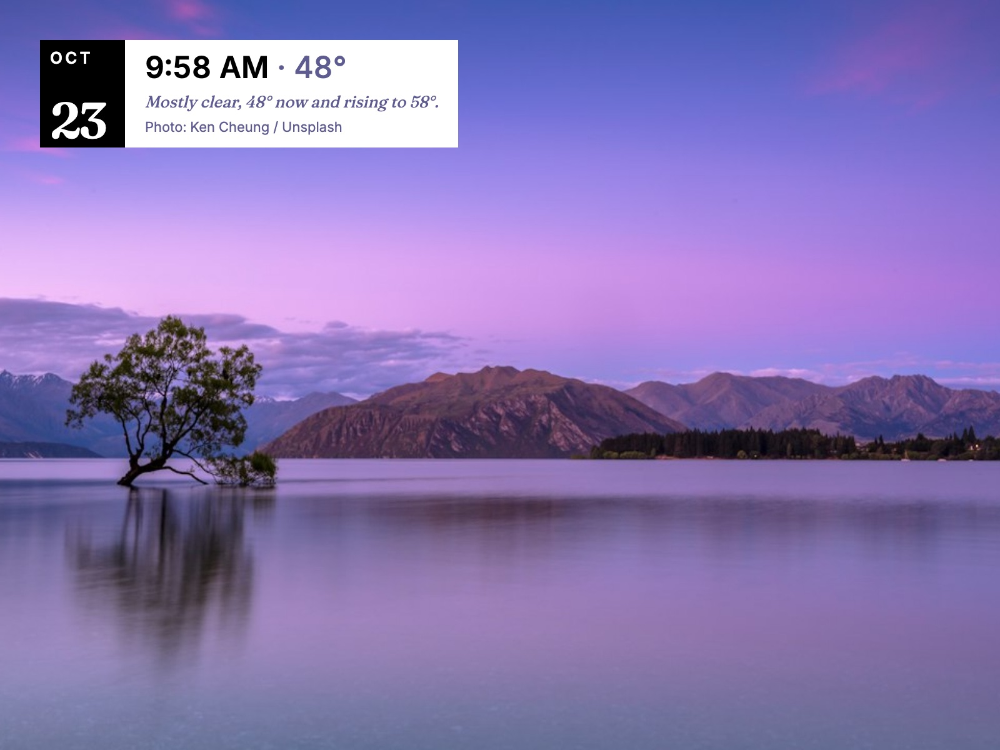

The art is the display.
A full-frame photograph — from Unsplash by season and category, or your own uploads — with a small card in one corner: the date, the temperature, a line about the weather, and credit for the photographer. Information stays peripheral.